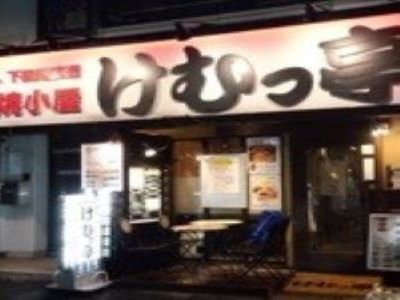
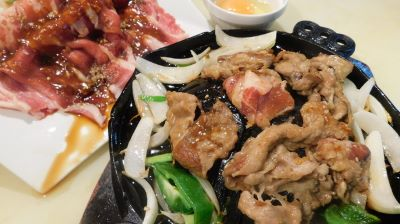

けむっ亭


東中野駅から徒歩2分の場所にある【けむっ亭】は、都会の真ん中にありながら肉＆海鮮のBBQを楽しめるお店。焼でも生でも楽しめる海の幸は、下田や大田市場から仕入れる新鮮素材!“脳天”や“ほほ肉”と言ったマグロの希少部位を使ったメニューも楽しめますよ。 炭火で味わう肉には、黒毛アンガス牛～和牛肉まで取り揃え！店内でカットした切りたてだから美味しさが他とは違います。肉も魚もウマさに自信！是非、ご賞味あれ！
- 予約・問い合わせ
- 050-5596-9372
- 営業時間
- 17:00～24:00（L.O 23:30）
日曜営業
定休日 月曜日 - メニュー
- 飲み放題コース
3000円～4000円のコース、4000円～5000円のコース、5000円～8000円のコース
ドリンク
日本酒あり、焼酎あり、ワインあり、カクテルあり、焼酎にこだわる
料理
魚料理にこだわる